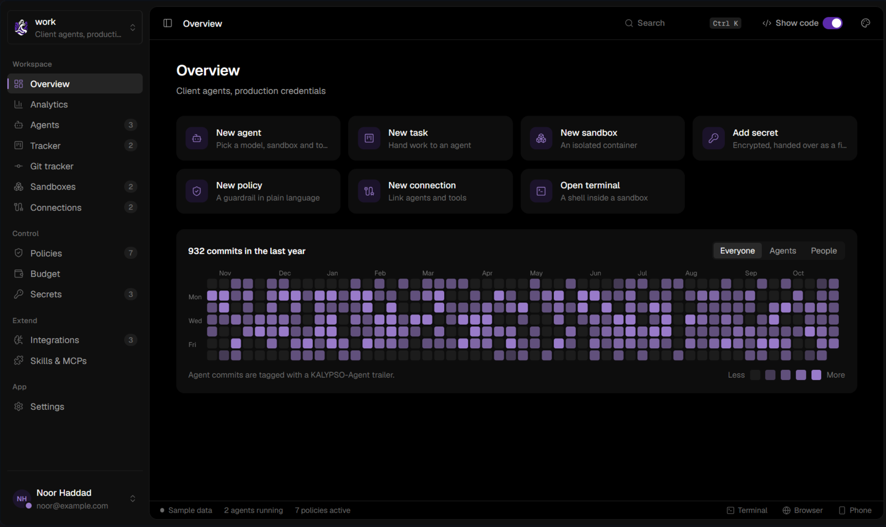
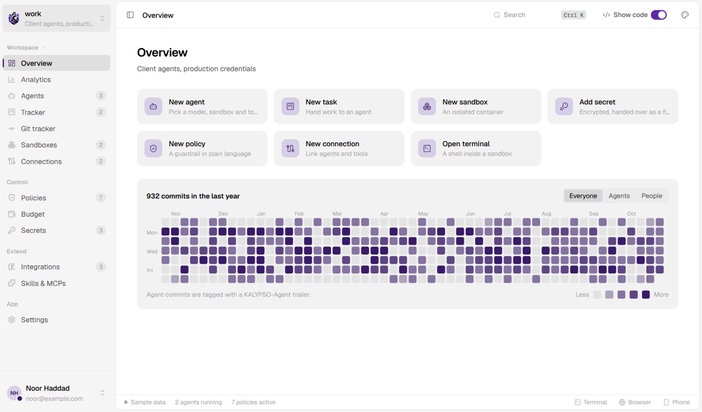
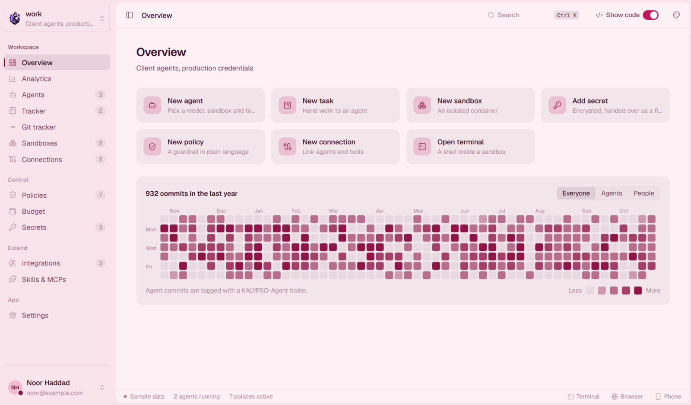
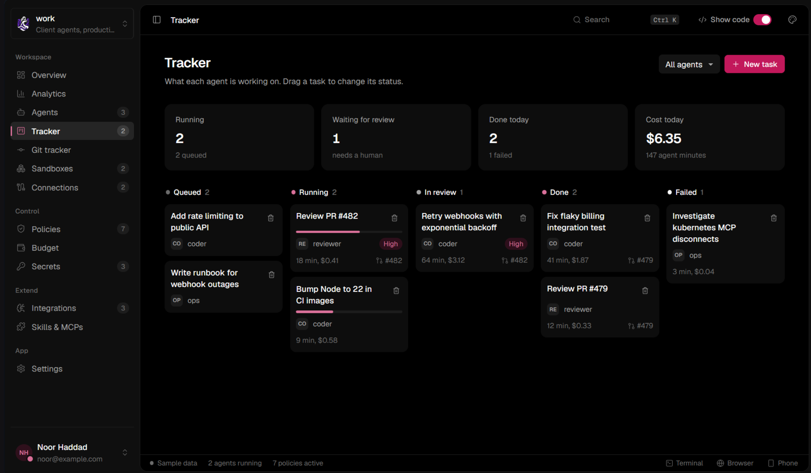
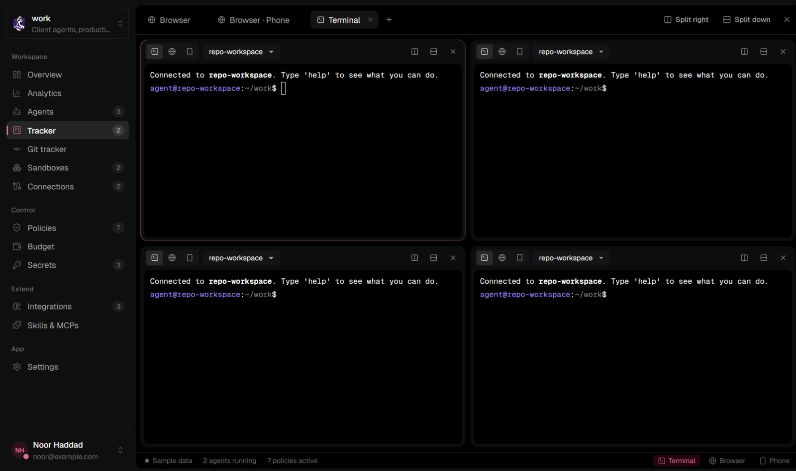

Sandboxes
Every agent runs in a container with a read-only root, no Linux capabilities and its own network. Docker or Podman today, microVMs next. Open a real shell in any of them, split as many ways as you like.
KALYPSO is a desktop workspace for your agents. Each one works in a hardened sandbox, uses only the secrets you hand it, stays inside a budget, and asks before it does anything you've marked as risky.

Every agent runs in a container with a read-only root, no Linux capabilities and its own network. Docker or Podman today, microVMs next. Open a real shell in any of them, split as many ways as you like.
Personal, work, a client: separate networks, keys, budgets and policies. Nothing crosses over.
Encrypted per namespace and handed to agents as files, never in prompts. Provider keys never enter a sandbox at all.
Every model call goes through a local proxy that holds the real keys and meters each token. Anthropic and any OpenAI-compatible API.
Daily, monthly and per-run caps that pause an agent, switch it to a cheaper model, or just tell you.
Plain-language rules like “never force-push to main”, checked before every tool call. Block, warn, or hold the call until you approve it, from wherever you are in the app.
git push --force origin main → blocked by “No force-push to main”
A board of what each agent is working on, with time, cost and the pull request it opened.
Obsidian, Notion, Confluence, GitHub, Jira, Linear, any MCP server or REST API. Mark a notes app as a brain and agents share it as long-term memory. Install skills straight from GitHub.
Configs, specs and diffs stay folded until you open them.
Black, White and Blossom themes, or your own colours and font.




The latest release, straight from GitHub.
Windows 10 and 11, 64-bit
Download .exe installer or the .msi packageApple silicon
Download .dmgx86_64
Download .AppImage .deb .rpmKALYPSO is early software and its installers aren't code-signed yet. On Windows, SmartScreen may say it doesn't recognise the app: choose More info, then Run anyway. For sandboxes, install Docker Desktop or Podman.